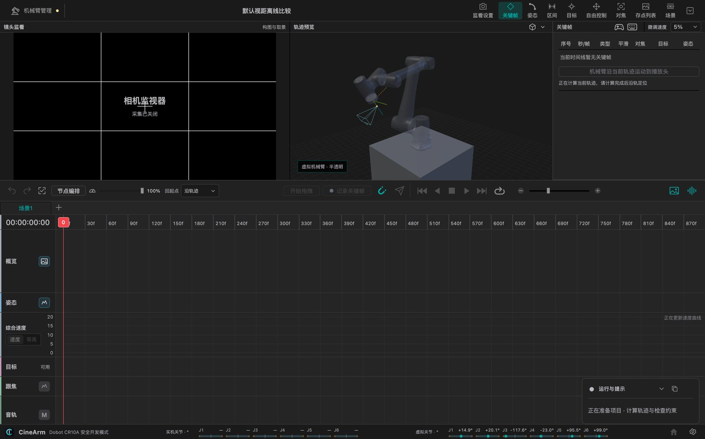

A used collaborative arm and CineArm are enough to make a repeatable camera move — positions, timing, lens aim and focus on one timeline. Rehearse on a virtual arm, then drive the real one on set. No jib rental, no full crew.
The barrier was never the camera or the idea — it was hardware only a production company could keep.
Collaborative arms are everywhere on production lines now, and used units land in the low tens of thousands — an order of magnitude below a dedicated cinema robot. One that carries your body is enough.
Practise the whole move on a virtual arm. Nothing wears out, nothing costs a day rate, no stage needed — get it right, then drive the real arm.
Positions, path, speed and focus are saved as a timeline. Shoot it today, pick it up tomorrow — the same move, not a memory of it.
Not a review — a record of buying my first arm. The kit, the account, the base, the camera plate, the inspection. I hit all of them.
The four questions that come up most — one tap for the answer.
From the first camera position to the final stop, everything happens on the same canvas.
Save a few camera positions, decide which comes first and how long each move takes. Undo anything, and keep several versions of the same shot in one project.
Straight lines, three-point arcs, arcs around a target, or custom transitions — with speed and easing set per segment, so long moves never lurch.
Save the point the lens should look at as a target, and the whole move keeps aiming at it. Move the arm anywhere and the framing holds.
Focus changes along the timeline and drives a focus motor. Or program the focus curve first and calibrate the motor on set.
Run the entire workflow with no hardware: a simulated arm you can take over, fine-tune and record against. Every step is the same.
Snapshots remember the framing so you can return to it later. Monitoring feed, guides and virtual sets are all adjustable on set.
This is the order the app works in — and every step can be revisited on its own.
Move the arm to where you want it, or type the angles, and record the pose. A move segment appears between two positions, and the order is yours to change.
Each segment can be a straight line, a three-point arc, or an arc around a target. The speed curve works as a whole or per segment, with acceleration tuned separately.
Create a reusable target so a whole move keeps aiming at it. Focus runs on the timeline — program the curve first, calibrate the motor on set.
Play, pause, nudge and swap versions on the virtual arm without touching hardware. Compare several takes before committing to one.
Drive the arm to the start of this take, then run. Pause and resume from where you stopped; a dedicated recovery path covers faults without re-blocking the shot.

No command memorisation — you work by feel and by frame.
Type numbers, drag directly, nudge with the keyboard, or push a gamepad — whichever suits the moment, without switching tools.
Import audio, drop beat markers on the waveform, and time the moves to the track. Picture and sound land together.
Several versions of a shot can live in the same project. Walk through them all before the take and pick the one that reads best.
Pause mid-run and resume from where you stopped. If something does go wrong, a dedicated recovery path gets you back without stalling the set.
CineArm targets Dobot collaborative arms. The current release registers Nova 5, CR5, CR10, CR10A (including CR10V) and CR20A — all of them usable for virtual rehearsal without any hardware.
The light 5 kg tier, suited to mirrorless bodies, small rigs and locations that change often. Nova 5 weighs 14 kg and one person can move it.
The 10 kg workhorse tier, enough for mid-size bodies and common focal lengths. CR10V shares its project configuration with CR10A, so treat them as one option.
20 kg payload and 1700 mm reach for heavy bodies and long lenses. A virtual model is available today for blocking the shot in software.
Practice and prep cost nothing. The limits only matter once you start rolling. Four free pose keyframes mean three move segments — enough for most shots.
Studio ¥2,000: one-time purchase, updates continue for as long as the author operates the project — no annual fee.
One-to-one support ¥9,999: includes the Studio licence — effectively ¥2,000 of Studio plus hands-on help — I am one person with limited time.
See the full free vs Studio comparison →
Filing a regular issue is not support: post a zip with the full reproduction steps and log capture in the WeChat group and it is handled for free. The paid tier is for hands-on troubleshooting and remote sessions.
Current version v0.1.46. All three platforms ship together, and the app can check for updates itself.
Checksums: SHA256SUMS.txt · all previous versions and notes live in CineArm-Releases.